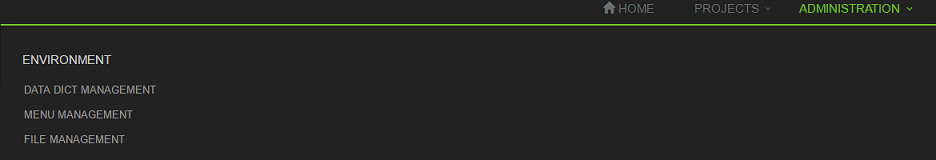
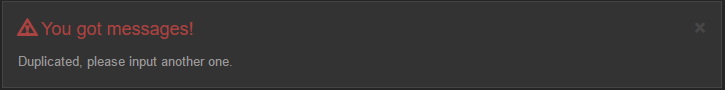

Web Thymeleaf module defines a customized thymeleaf dialect and its template processors. It currently provides the following processors:
<yq:pagination page="${page}" th:href="@{/project/menu}"/>
<div yq:pageSummary="${page}"></div>
<yq:menus layout="full-width"/>

<yq:breadcrumbs menu="PROJECT_MENU_ITEM"/>
<yq:alert level="danger" />
